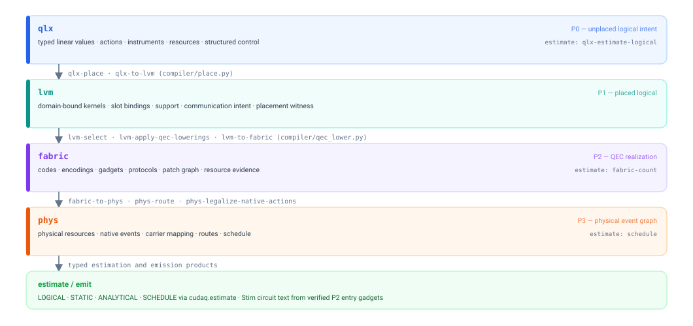
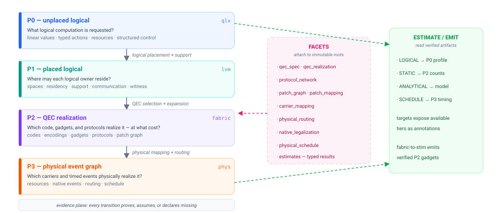
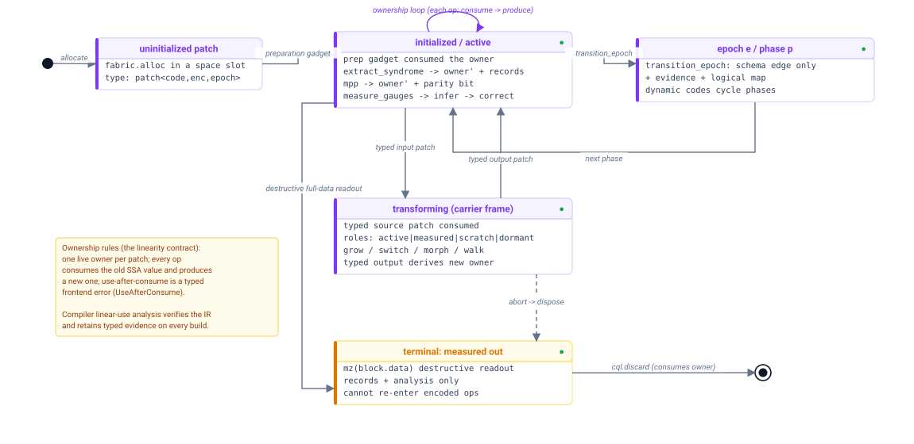

Architecture
This advanced reference is for contributors and for users who inspect dialects, passes, or intermediate representations. For the Python interface, start with Getting started and the use cases.
CUDA-Q Logical has one user surface over four semantic stages, orthogonal analysis facets, and one primary MLIR dialect family per stage. This page walks you through the whole machine: the dialect stack, the artifact model, the ownership contract, the compile pipeline, and the verification layers that hold it together.
The dialect stack
Each semantic stage owns one primary representation family, and the passes that convert between families are the canonical compiler lowerings. Analysis facets are ops and results inside the owning representation, not extra semantic stages.
{kind=link}

One primary representation family per stage. The named passes on the arrows are the canonical lowerings; the green strip summarizes estimation and emission products.
The division of labor is strict. qlx (P0) may not mention a machine or a code.
lvm (P1) binds values to machine spaces and slots but does not choose codes.
fabric (P2) is the QEC semantic hub: codes, encodings, verified gadgets,
protocols, and the static resource evidence derived from them. phys (P3)
binds those realizations to physical resources, native events, routes, and
schedules.
The semantic spine and its facets
Stages describe semantic commitment: a later stage must discharge the intent its earlier stages left open, and each transition produces immutable evidence instead of silently filling in missing physics.
{kind=link}

The semantic spine. Facets (pink) attach to immutable stage roots; consumers (green) sit orthogonal to the spine and read the verified stage they need.
Facets attach independently verified facts to stage roots
(cudaq.logical.stages.Facet). P2 facets include QEC_SPEC,
QEC_REALIZATION, PROTOCOL_NETWORK, and PATCH_GRAPH; physical lowering and
scheduling attach their own. A build reports the ones it carries, so
cudaq.logical.stages.PROTOCOL_NETWORK in p2.facets is the way to ask.
Estimate results attach the same way: typed records naming their producer,
source, and evidence.
Definitions versus builds
Decorators create reusable definitions:
@cudaq.logical.programdefines an executable application kernel;@cudaq.logical.objectivedefines reusable ideal behavior to claim against;@cudaq.logical.machinedefines logical spaces, capabilities, and capacity;@cudaq.logical.codedefines a QEC code as validated data;@cudaq.logical.gadgetdefines one encoded realization of an objective; and@cudaq.logical.protocolcomposes resources, rotations, and postselection into a reusable protocol.
(cql above is the shipped alias: import cudaq.logical as cql.)
cudaq.logical.compile traces a definition into an immutable Build;
cudaq.logical.compiler.place continues a P0 build into a placed P1 build
without retracing Python. Every build serializes and replays exactly:
Build.replay(build.serialize()) reproduces it, witness included.
The artifact model
Three clusters of artifacts carry the system’s semantics.
The QEC algebra. You author a @cudaq.logical.code as data — block shape,
stabilizer checks, logical operators, distance. CUDA-Q Logical validates it at
construction and materializes it into the fabric dialect on demand. Reusable
families live in cudaq.logical.codes (Steane, rotated surface, repetition,
Reed–Muller 15, bare qubit); cudaq.logical.codes.BareQubit is the honest
no-protection boundary used by protocol factories.
The gadget stack. A gadget claims an objective through implements=; an
ordinary authored body over typed patches realizes it. Matching compares the
body’s derived Clifford action against the claimed objective — a typed contract,
not a naming convention. Compilation materializes typed gadget records
(fabric-materialize-record-schemas) before verification.
Machines, placement, and builds. A @cudaq.logical.machine declares
logical regions with capabilities and capacity; a layered device binds those
regions to QEC architectures and physical resources. Placement constraints such
as cudaq.logical.architecture.colocate(...) guide the P1 solver. QEC
selection produces P2, and physical projection, routing, native legalization,
and scheduling produce P3. Builds are immutable: continuing one never mutates
it, and every estimate or emission reads a private view.
Data ownership
Logical qubits, encoded patches, and protocol resources are linear owners.
Operations consume the incoming owner and return its successor; measurement or
an explicit cudaq.logical.discard ends ownership. The IR verifiers reject
duplication, stale reuse, and mismatched branch carries — there is no in-place
mutation anywhere in the IR.
{kind=link}

The linear life of a patch: every arrow consumes the incoming owner and produces a successor.
The compile pipeline
cudaq.logical.compiler.pipelines.* presets name the canonical pass sequences.
Passes declare the facets they require and provide, so an out-of-order pipeline
fails verification instead of guessing:
Preset |
Passes |
Output |
|---|---|---|
|
|
verified P0 |
|
|
verified P1 + placement witness |
|
|
verified P2 (realization + protocol network) |
|
|
verified P3 physical event graph |
|
|
P0 legalized to positive H/S/T/CX |
|
|
P0 in Pauli-based-computation form |
Definition-level recipes verify the other facets: qec_definitions()
(fabric-verify-p2s, provides QEC_SPEC), gadgets() (fabric-verify-p2a,
requires QEC_SPEC, provides QEC_REALIZATION), and protocols()
(fabric-link-calls, fabric-verify-p2n, provides PROTOCOL_NETWORK).
device_stack(profile) verifies an immutable device prefix against its p1,
p2, or p3 profile.
Four estimation tiers read verified artifacts without changing their semantic
stage. Tier.LOGICAL profiles P0; Tier.STATIC counts a selected P2 network;
Tier.ANALYTICAL combines P2 counts with an explicit physical model; and
Tier.SCHEDULE authenticates resources and timing from a scheduled P3 graph.
Presets are ordinary Pipeline values: insert_after, configure, replace,
append, and remove compose them without string surgery.
The P2 patch graph
Topology survives as inspectable evidence before physical lowering. A
selected P2 build exposes build.patch_graph: a typed, read-only view
(PatchGraphView) of the patch instances and logical interactions the
realization implies, derived from canonical fabric IR facts. You can convert
the view to NetworkX or render it to PNG when the optional packages are
installed. Placement stays code-agnostic at P1, and the interaction structure
that a placement implies becomes checkable at P2. P3 then maps those patches to
physical resources, routes their interactions, legalizes native events, and
records the schedule as separate verified facets.
Verification layers
Three independent layers enforce correctness:
Construction: CUDA-Q Logical validates a code definition as you author it — stabilizer shape, logical operators, and distance evidence must agree before a
@cudaq.logical.codeexists at all.IR verifiers (C++): every stage boundary has a verify pass —
qlx-verify-p0,lvm-verify-p1,fabric-verify-p2s/-p2a/-p2n,fabric-verify-machine, andphys-verify-p3, plus the gate-set verifiersqlx-verify-clifford-tandqlx-verify-pbc. Missing or inconsistent evidence fails closed. A Python linear-use analysis (compiler/linearity.py) and strict link completeness (compiler/link_check.py) back them on the authoring side.Semantic verification: the analysis derives a gadget’s Clifford action from its body and compares it against the claimed objective (
cudaq.logical.gadgets.analysis.clifford_action); names never select semantics.
Typed inspection
You inspect builds through typed APIs, not text scraping: build.stage,
build.placement, build.definitions, build.calls(symbol),
build.protocol_for(objective), build.status, build.synthesis,
build.patch_graph, build.to_mlir(), build.content_sha256, and
build.serialize() / Build.replay(...). Estimate results are typed the same
way: LogicalEstimate, FabricCounts, FabricEstimate, and
ScheduleEstimate expose structured results from the four estimation tiers.
Package map
cudaq/logical/
programs/ programs, objectives, selection intents, typed references
ops/ canonical executable authoring operations
types/ canonical values, references, annotations, traced proxies
algebra/ exact angles, Pauli algebra, Clifford actions, GF(2) values
codes/ code definitions, encodings, profiles, blocks, families
gadgets/ gadget definitions, typed records, verification, factories
protocols/ protocol definitions, builders, resource protocols
architecture/ logical, QEC, and physical architecture
devices/ layered devices, resources, regions, reusable local recipes
compiler/ pipelines, immutable builds, placement, synthesis, topology
estimate/ logical, static, analytical, and schedule estimation
experiments/ immutable, reproducible compilation experiments
algorithms/ algorithm libraries (the Gidney–Ekerå study)
analysis/ resource-estimation and evidence APIs
lower/ target lowering and Stim emission
targets/ built-in CUDA-Q targets (estimator, clifford_t, surface)
std/ standard resource kinds and objectives (T_STATE, ...)
qec/ QEC implementation-lowering contracts
dialects/ generated MLIR Python bindings (qlx, lvm, fabric, phys)
stages.py stage and facet enums
Extensibility
You can write the same typed values the decorator surface produces through the
lower-level builders. Pipelines are composable values, gate sets are data
(GateSet: actions plus legalization passes), and new CUDA-Q targets wrap a
backend with Target.from_backend(...). Device- and code-specific libraries
are ordinary Python modules, not global registries.
Where to go next
The core concepts explain the stage, ownership, and evidence model this architecture implements.
The use cases apply the Python interface to codes, placement, synthesis, estimation, and emission.